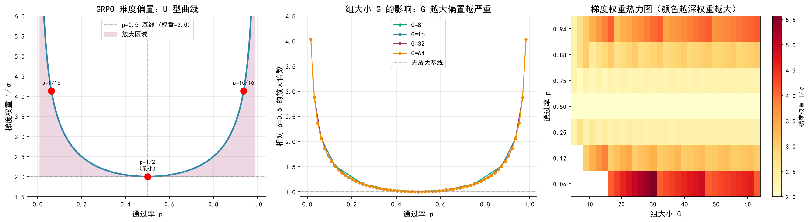
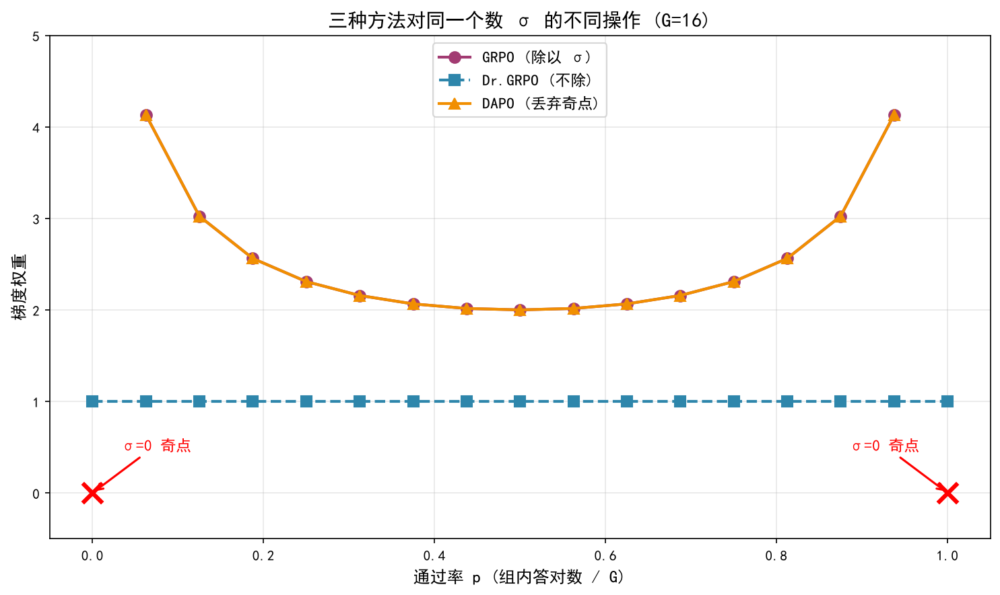

这篇笔记可以放映
▶ 打开幻灯片 —— 放映中按 F 全屏,P 进演讲者模式。
RL 算法研究进展¶
2025–2026 调研
调研日期 2026-08-10 配套：《verl技术特性调研报告》（实操侧）
一句话总结¶
这两年 RL for LLM 的算法创新，主心骨不是"发明新目标函数"，
而是围绕 GRPO 这个极简骨架，逐条修掉它的偏置、方差和数值不一致问题。
七条主线¶
- critic-free 成为默认（GRPO 家族全面占领）
- 但 value function 并没有死（VAPO 反例）
- 重要性采样的粒度和裁剪方式成了最活跃战场
- 训练-推理数值不一致从"工程 bug"升格为"算法问题"
- 熵坍塌被给出了可操作的定量刻画
- 奖励设计从 rule-based 走向 rubric + 生成式 RM
- RL 算力占比在暴涨（DeepSeek-V3.2：超预训练成本 10%）
演化谱系¶
PPO (2017) ── actor + critic + GAE + clip
│
┌──────────────┼──────────────────────┐
│ │ │
去掉 critic 保留 critic 完全离线
│ │ │
GRPO VC-PPO DPO / IPO / KTO
(group baseline) VAPO (隐式奖励，无采样)
│
┌────┴─────┬──────────┬───────────┬──────────┐
Dr.GRPO DAPO GSPO CISPO SAPO
(去偏置) (四件套) (序列级IS) (软化IS权重) (温度门控)
三条路径的取舍¶
| 路径 | 优点 | 代价 | 现状 |
|---|---|---|---|
| PPO + critic | 细粒度 credit assignment | 多一个模型的显存；value 在长 CoT 上偏置严重 | 小众但未死 |
| critic-free | 省一个模型；实现简单 | 优势估计粗；方差大 | 主流 |
| 纯离线 DPO | 最省；无需采样 | 不能远离 SFT 策略；无法自我探索 | 退化为对齐后处理 |
GRPO 的三宗罪¶
最核心的一节
GRPO 的骨架¶
同一 prompt 采 G 个回答，用组内均值和标准差归一化：
三个被后续工作反复攻击的点：
/std(R)引入难度偏置- 按序列长度归一化引入长度偏置
- token-level IS ratio 方差爆炸（MoE 的噩梦）
第一宗罪有闭式解¶
二元奖励下，组内标准差完全由通过率 p 决定：
| 组内答对数 k (G=16) | 通过率 p | 梯度权重 1/σ | 相对 p=0.5 |
|---|---|---|---|
| 0 | 0.000 | ∞（除零） | — |
| 1 | 0.0625 | 4.13 | 2.07× |
| 8 | 0.500 | 2.00 | 1.00×（最小） |
| 15 | 0.9375 | 4.13 | 2.07× |
| 16 | 1.000 | ∞（除零） | — |
这张表说明三件事¶
-
U 型曲线 — 权重在 p=0.5 处最小，向两端上升。 简单题和难题被放大，中等难度题被压制 —— 而中等难度题信息量最大。
-
两端是真正的奇点 — p=0 或 1 时 σ=0，advantage 变成 0/0。 DAPO 的 Dynamic Sampling 本质就是丢掉这两列，它不是在修正偏置，是在回避除零。
-
组越大偏置越严重 — G=16 最极端约 2×，G=64 可以到约 4×。 相当反直觉：直觉上会以为加大 G 是在降方差。
难度偏置的形状¶

左：U 型曲线 中：不同 G 值的放大倍数 右：热力图
三种做法，同一个 σ¶

| 方法 | 对 σ 做什么 | 后果 |
|---|---|---|
| GRPO | 除以它 | 引入 U 型难度偏置 |
| Dr.GRPO | 不除 | 去掉偏置 |
| DAPO | 丢掉 σ=0 的组 | 回避奇点 |
Dr.GRPO — 去掉两个偏置项¶
COLM 2025, sail-sg
问题： GRPO 有一个优化偏置，会人为拉长回答长度，尤其是错误回答。 社区常说的"RL 训着训着模型变啰嗦"，算法根源就在这 —— 不是模型学会了深度思考。
修法： 去掉 /std(R)，去掉 per-trajectory 长度归一化
争议： 2026 有工作论证「无偏」与「长度不变」在 outcome reward 下不可能同时满足。 不是"直接抄就赢"的改动，需要自己跑 ablation。
DAPO — 四件套，工程上最实用¶
ByteDance Seed × 清华 AIR，Qwen2.5-32B base 上 AIME 2024 拿到 50 分
| 技巧 | 解决什么 | 做法 |
|---|---|---|
| Clip-Higher | 熵坍塌 | 解耦上下界，ε_low=0.2, ε_high=0.28 |
| Dynamic Sampling | 全对/全错组梯度为零 | 过滤 std=0 的组，继续采样填满 batch |
| Token-level Loss | 长回答里 token 被稀释 | 在 mini-batch 全部 token 上聚合 |
| Overlong Shaping | 截断样本给错误负信号 | 硬截断下设 4096 缓冲区，线性惩罚 |
每一个都可以独立拆下来用。Clip-Higher 是性价比最高的单点改动 —— 一行配置。
GSPO — 把 IS 提到序列级¶
Qwen 团队。Qwen3 系列就是用这套训的。
核心洞察：奖励是序列级的，IS 权重却是 token 级的 —— 粒度不匹配本身就是方差来源。
最重要的实证结论：GSPO 显著稳定了 MoE 的 RL 训练。 MoE 的 routing 是离散 top-k，训练/推理间微小数值差异会翻转路由， 逐层累积后大部分 token 被路由到不同专家，token-level IS 假设直接崩掉。
代价： 一条序列里只要有几个强 off-policy token，GSPO 会压制整条序列的梯度。
CISPO — 裁权重，不裁更新¶
MiniMax-M1
# GRPO：ratio 出界 → 该 token 梯度归零（信息彻底丢失）
# CISPO：clip(ratio).detach() 作为系数 → 梯度保留方向，只压幅度
L = - E[ sg(clip(ρ_t, 1-ε, 1+ε)) · A · log π_θ(a_t) ]
为什么重要： 长 CoT 里 ratio 出界的 token，往往恰恰是关键转折词 —— "wait"、"but"、"actually" 这类引发反思的低概率词。
硬裁剪把它们的梯度扔掉，等于系统性地压制了反思行为的学习。
SAPO — 软自适应门控¶
Qwen 团队，2025-11。Qwen3-VL 用的就是这个。
问题定位： 硬裁剪造成"稳定性 vs 有效学习"二选一；GSPO 的序列级压制粒度太粗。
做法： 用平滑的、温度控制的门控替代硬裁剪。 自称同时具备 sequence-coherent 和 token-adaptive。
与 GSPO 的直接对比： 一条序列里有几个强 off-policy token 时 —— GSPO 压制整条序列，SAPO 只降权那几个 token，保留近 on-policy 部分的学习信号。
一个观察¶
*PO 这个方向已经相当内卷，命名空间几近枯竭。
DCPO / SPO / DGPO / DISPO / OPO / GPG …
边际收益在收窄。我不建议我们投入精力再造一个 PO。
真正的增量在后面几节。
训练-推理不一致¶
我认为整份报告里对工程落地最重要的部分
问题本质：三个策略，很多实现只认两个¶
π_rollout—— 推理引擎（vLLM/SGLang）实际采样用的策略π_old—— 训练引擎重新前向算出的"旧策略"π_θ—— 当前正在更新的策略
常见错误：把 π_old 当作行为策略，完全忽略 π_rollout 的存在。
来源：精度差异（FP8/BF16）、后端差异、MoE routing 翻转（最严重）、 top-p/top-k 截断造成的动作空间不一致、异步训练的 stale checkpoint
verl 文档："This is not PPO's fault - PPO itself is mathematically correct." 错的是那个假设，而它会直接导致训练崩溃。
四层修法¶
第一层 修因（最彻底） Router Replay（MoE 必备）—— 记录 rollout 时每个 token 实际选的专家，训练时强制复用同一路由。 DeepSeek 称 "keep routing"，从 V3-0324 起就在用，明确说是 MoE RL 稳定性的关键。 Keep Sampling Mask —— 把 top-p/top-k 截断 mask 持久化，训练时同样施加。
第二层 修权重（TIS / MIS）
w = exp(clamp(log_ratio, -20, 20)).clamp(max=threshold)
关键设计：只截上界不截下界 —— 保留小权重情形下的无偏性。
第三层 修目标函数 — 就是 CISPO 和 GSPO 在做的事
第四层 数据侧兜底 — 丢掉偏差超阈值的序列。 DeepSeek 的精妙细节：只对负优势序列施加掩码。
一个必须记住的实证结论¶
verl 的 FP8 实验，这是整份报告最有操作价值的单条数据：
Qwen3-8B-Base 上做 FP8 rollout， 开 token-level TIS 时精度与 BF16 齐平；不开 TIS 时有明显精度下降。
低精度 rollout 的加速红利，是靠 IS 校正才能安全兑现的。
想上 FP8 省成本，就必须同时上 rollout correction —— 两者是配套的。
熵坍塌¶
从现象到可操作的干预
定量刻画¶
三个层次的结论：
-
现象 — 不做干预时，策略熵在训练早期急剧下降，探索能力消失，性能饱和。
-
定量关系 — 拟合出
R = -a·exp(H) + b熵是性能的上限。 熵一旦耗尽，性能就锁死了。 实用价值：看着熵曲线就能预判天花板，不必等跑完。 -
机制 — 熵的变化量与「token log-prob 和其 advantage 的协方差」直接相关。 高协方差 token 是把熵推下去的元凶。
两种精准干预¶
定位到元凶后，干预可以很精准（都只作用于高协方差 token）：
- Clip-Cov — 对高协方差 token 裁剪更新
- KL-Cov — 对高协方差 token 施加 KL 惩罚
效果（7 个数学 benchmark 平均）：
| 模型 | GRPO | Clip-Cov | KL-Cov |
|---|---|---|---|
| Qwen2.5-7B | 38.6 | 40.4 | 40.6 |
| Qwen2.5-32B | 45.8 | 50.3 | 52.2 |
模型越大收益越大（32B 上 +6.4 分），难题上增益更明显。
实操建议：三个层次，成本递增¶
- 先调
clip_ratio_high—— 一行配置 - 不够再上 KL-Cov —— verl 有现成脚本
- 最后才考虑显式熵正则（
entropy_coeff）—— 容易训崩，慎用
另有工作给出不同归因：熵动力学主要由裁剪边界的不对称性决定，而非协方差。 结论有冲击力：即使 reward 完全随机，熵也会下降（clip-high 占主导）。
这与 DAPO 的 Clip-Higher 在方向上完全一致，算是互相印证。
RL 到底有没有扩展推理边界？¶
这场仗决定了我们该给 RL 分配多少算力
两派¶
悲观派（Yue et al.） RL 训练后的模型在高 k 的 pass@k 上反而不如 base model。 RL 只是把概率质量集中到 base 已有的正确路径上 —— 是"锐化"而非"扩展"。 支撑：只看正确率的 RLVR 会造成多样性坍塌。
乐观派（ProRL, NVIDIA, NeurIPS） 之前的悲观结论是因为训得不够久。 长时间 RL 能挖出 base model 即使大量采样也到不了的推理策略。
DeepSeek-V3.2 用真金白银站在乐观派：RL 预算超过预训练成本的 10%。
我的判断：两派其实不矛盾¶
分歧在于训练时长和探索保持：
- 短程 RL + 无熵干预 → 确实是锐化，pass@k 会退化
- 长程 RL + 熵/多样性维护 → 能扩展边界
可操作的三条：
- 必须同时监控 pass@1 和 pass@k —— 只看 pass@1 会让你误以为在进步， 实际上多样性正在崩。这是最容易踩的坑。
- 别过早停止 RL —— ProRL 的教训是很多人在收益出现前就停了。
- 把多样性写进目标 —— pass@k-aware 的目标能同时改善两者。
对我们的启发¶
按投入产出比排序 —— 整份报告我最想传达的部分
第一梯队：几乎零成本，立刻做¶
1. Clip-Higher（一行配置）
2. 开启 rollout correction 的监控（先只看不改）
先测 rollout_corr/kl、log_ppl_abs_diff、chi2_token，搞清楚我们的 gap 有多大。
在不知道 gap 大小的情况下调其他超参，等于在噪声上做优化。
开销只有 ~1% 显存、1-3% 算力。
3. 同时监控 pass@1 和 pass@k — 纯监控成本
4. 熵曲线 + R = -a·exp(H) + b — 拟合一下就能预判天花板
第二梯队：明确收益，需要少量工作¶
5. Dynamic Sampling — 过滤全同 reward 的组，纯浪费算力。
DAPO 用 gen_batch_size=1536 / train_batch_size=512 的超采样比。
6. loss_agg_mode 选 token-mean — Dr.GRPO 和 DAPO 一致推荐。
verl 默认就是这个，但要确认没被改掉。
7. Overlong Reward Shaping — 截断样本的负信号是错的 （模型没答错，只是没写完）。设 4096 缓冲区做线性惩罚。
8. KL-Cov（如果熵坍塌确实是瓶颈）— 32B 上 +6.4 分很实在。
第三梯队：取决于我们的具体场景¶
9. 如果训 MoE → Router Replay 是必需品，不是可选项 DeepSeek 从 V3-0324 就在用。同时考虑 GSPO 的序列级 IS。
10. 如果想上 FP8 rollout → 必须同时上 TIS 收益：dense 约 12-18% 加速，MoE 超过 35%。
11. 如果任务有中间可验证信号 → 认真考虑 value-based（VAPO 路线） 多步工具调用这类场景，细粒度 credit assignment 的价值远高于纯数学题。 别因为社区都用 GRPO 就默认放弃 critic。
12. 奖励设计投入 > 算法投入
如果 RM 质量是瓶颈，再换十个 *PO 都没用。
如果只记三件事¶
-
Clip-Higher —— 一行配置，抑制熵坍塌，性价比最高
-
先量训练-推理 gap，再调别的 —— 不知道 gap 就调超参 = 在噪声上做优化
-
奖励设计的投入回报高于算法投入 —— 换十个
*PO抵不上修好 RM
完整细节见《RL算法调研报告》，含各节的论文链接和待确认事项。